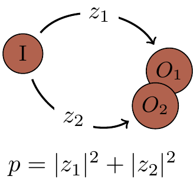

1.10 Remarks and exercises
1.10.1 A historical remark
Back in 1926, Max Born simply postulated the connection between amplitudes and probabilities, but did not get it quite right on his first attempt. In the original paper23 proposing the probability interpretation of the state vector (wavefunction) he wrote:
… If one translates this result into terms of particles only one interpretation is possible.
\Theta_{\eta,\tau,m}(\alpha,\beta,\gamma) [the wavefunction for the particular problem he is considering] gives the probability^* for the electron arriving from thez direction to be thrown out into the direction designated by the angles\alpha,\beta,\gamma …
^* Addition in proof: More careful considerations show that the probability is proportional to the square of the quantity\Theta_{\eta,\tau,m}(\alpha,\beta,\gamma) .
1.10.2 Modifying the Born rule
Suppose that we modified the Born rule, so that probabilities were given by the absolute values of amplitudes raised to the power
Recall that the

Figure 1.7: The unit spheres in the
The image of the unit sphere must be preserved under probability preserving operations.
As we can see in Figure 1.7, the
1.10.3 Complex numbers
Complex numbers have many applications in physics, but it was not until the advent of quantum theory that their ubiquitous and fundamental role in the description of the actual physical world became so evident. Even today, their profound link with probabilities appears to be a rather mysterious connection. Mathematically speaking, the set of complex numbers is a field. This is an important algebraic structure used in almost all branches of mathematics. You do not have to know much about algebraic fields to follow these lectures, but still, you should know the basics.
TO-DO explain this lovely hierarchy going from sets to monoids to … to fields; also explain
- The set of rational numbers and the set of real numbers are both fields, but the set of integers is not. Why not?
- What does it mean to say that the field of complex numbers is algebraically closed?
- Evaluate each of the following quantities:
1+e^{-i\pi}, \quad |1+i|, \quad (1+i)^{42}, \quad \sqrt{i}, \quad 2^i, \quad i^i. - Here is a simple proof that
+1=-1 :1=\sqrt{1}=\sqrt{(-1)(-1)}=\sqrt{-1}\sqrt{-1}=i^2=-1. What is wrong with it?
1.10.4 Many computational paths
A quantum computer starts calculations in some initial state, then follows
1.10.5 Distant photon emitters
Imagine two distant stars, A and B, that emit identical photons. If you point a single detector towards them you will register a click every now and then, but you never know which star the photon came from. Now prepare two detectors and point them towards the stars. Assume the photons arrive with the probability amplitudes specified in Figure 1.8. Every now and then you will register a coincidence: the two detectors will both click.
- Calculate the probability of such a coincidence.
- Now assume that
z\approx \frac{1}{r}e^{i{2r\pi}/{\lambda}} , wherer is the distance between detectors and the stars and\lambda is some fixed constant. How can we use this to measurer ?

Figure 1.8: Two photon detectors pointing at two stars, with the probabilities of detection labelling the arrows.
1.10.6 Physics against logic?
Now that we have poked our heads into the quantum world, let us see how quantum interference challenges conventional logic and leads to qualitatively different computations.
Consider the following task (which we will return to a few more times in later chapters): design a logic gate that operates on a single bit such that, when it is followed by another, identical, logic gate, the output is always the negation of the input.
Let us call this logic gate the square root of
Figure 1.9 shows a simple computation: two identical computational steps performed on two states labelled as
Write a
Figure 1.9: A computation that, when repeated, gives exactly
1.10.7 Quantum Turing machines
The classical theory of computation is essentially the theory of the universal Turing machine — the most popular mathematical model of classical computation. Its significance relies on the fact that, given a possibly very large but still finite amount of time, the universal Turing machine is capable of any computation that can be done by any modern classical digital computer, no matter how powerful. The concept of Turing machines may be modified to incorporate quantum computation, but we will not follow this path. It is much easier to explain the essence of quantum computation talking about quantum logic gates and quantum Boolean networks or circuits. The two approaches are computationally equivalent, even though certain theoretical concepts, e.g. in computational complexity, are easier to formulate precisely using the Turing machine model. The main advantage of quantum circuits is that they relate far more directly to proposed experimental realisations of quantum computation.
1.10.8 More time, more memory
A quantum machine has
Suppose you are using your laptop to add together amplitudes pertaining to each of the paths.
As
1.10.9 Big O
In order to make qualitative distinctions between how different functions grow we will often use the asymptotic big-
When we say that
f(n)=O(\log n) , why don’t we have to specify the base of the logarithm?Let
f(n)=5n^3+1000n+50 . Isf(n)=O(n^3) , orO(n^4) , or both?Which of the following statements are true?
n^k=O(2^n) for any constantk n!=O(n^n) - if
f_1=O(g) andf_2=O(g) , thenf_1+f_2=O(g) .
1.10.10 Polynomial = good; exponential = bad
In computational complexity the basic distinction is between polynomial and exponential algorithms.
Polynomial growth is good and exponential growth is bad, especially if you have to pay for it.
There is an old story about the legendary inventor of chess who asked the Persian king to be paid only by a grain of cereal, doubled on each of the 64 squares of a chess board.
The king placed one grain of rice on the first square, two on the second, four on the third, and he was supposed to keep on doubling until the board was full.
The last square would then have
The moral of the story: if whatever you do requires an exponential use of resources, you are in trouble.
1.10.11 Imperfect prime tester
There exists a randomised algorithm which tests whether a given number
1.10.12 Imperfect decision maker
Suppose a randomised algorithm solves a decision problem, returning

- If we perform this computation
r times, how many possible sequences of outcomes are there? - Give a bound on the probability of any particular sequence with
w wrong answers. - If we look at the set of
r outcomes, we will determine the final outcome by performing a majority vote. This can only go wrong ifw>r/2 . Give an upper bound on the probability of any single sequence that would lead us to the wrong conclusion. - Using the bound
1-x\leqslant e^{-x} , conclude that the probability of our coming to the wrong conclusion is upper bounded bye^{-2r\delta^2} .
Max Born, “Zur Quantenmechanik der Stoßvorgänge”, Zeitschrift für Physik 37 (1926), pp. 893–867.↩︎
In the case
p=2 , we recover the usual Pythagorean/Euclidean equation that we all know and love: the distance of the point(v_1,v_2,\ldots,v_n) from the origin is\sqrt{v_1^2+v_2^2+\ldots+v_n^2} ; if we taken=2 as well then we recover the Pythagoras theorem.↩︎f=O(g) is pronounced as “f is big-oh ofg ”.↩︎One light year (the distance that light travels through a vacuum in one year) is
9.4607\times10^{15} metres.↩︎Primality used to be given as the classic example of a problem in
\texttt{BPP} but not\texttt{P} . However, in 2002 a deterministic polynomial time test for primality was proposed by Manindra Agrawal, Neeraj Kayal, and Nitin Saxena in the wonderfully titled paper “PRIMES is in\texttt{P} ”. Thus, since 2002, primality has been in\texttt{P} .↩︎This result is known as the Chernoff bound.↩︎